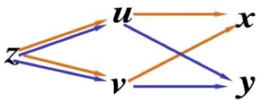
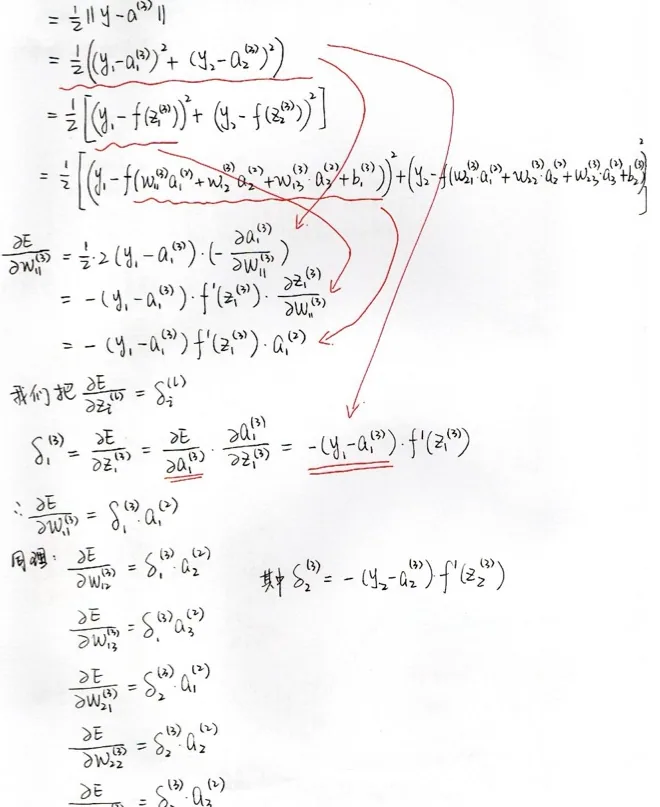
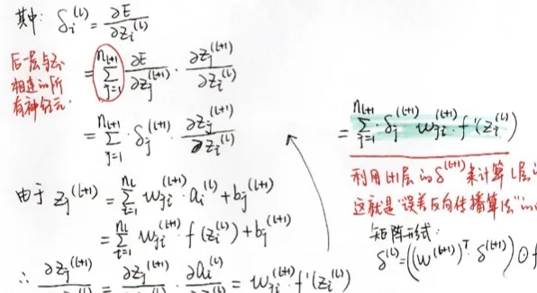
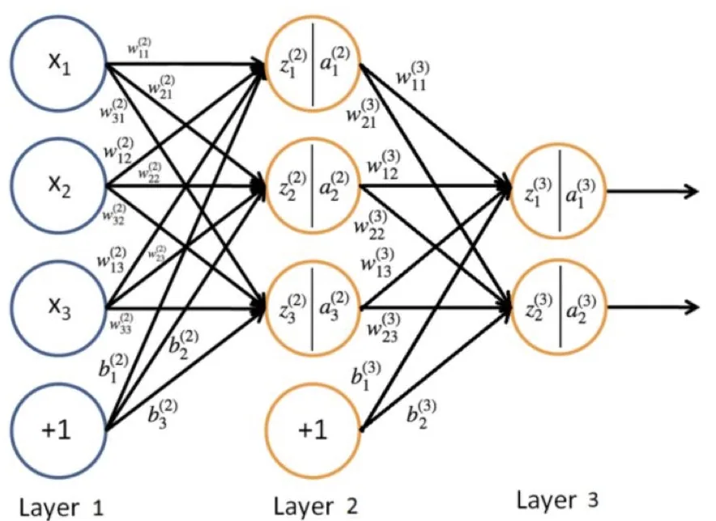

计算机视觉 · 第 5 章 前馈神经网络
5.8 反向传播算法
前面说「沿梯度反方向更新参数」，可是一个几十层、上百万参数的复合函数，梯度到底怎么算？这一节回答这个问题：先用链式法则说明复合函数的导数为什么能一层层拆开，再给出反向传播算法的核心思想——误差从输出层往回传，以及把整个算法浓缩成的四个公式。学完这一节，5.7 节里那句「梯度由反向传播算出」才算真正落地。
1. 如何计算梯度：复合函数与链式法则
神经网络本质上是一个复杂的复合函数（5.4 节已经写过它的迭代形式），想对它求导，靠的是微积分里的链式法则。以最简单的复合函数 F = g(f(x)) 为例，它的导数是 F′ = g′(f(x)) · f′(x)：外层函数的导数乘以内层函数的导数。
把这个结论推广到多层网络：一个 L 层网络的输出可以写成一层套一层的复合，那么损失 L 对第一层参数的导数，就是沿途各层局部导数的连乘。链式法则保证了「这个连乘成立」，而反向传播算法则是根据前馈网络的特点而设计的高效计算方法——它不改变数学结论，改变的是计算顺序，从而避免大量重复计算。

2. 反向传播的核心思想
课件用几页推导展示了 BP 算法的来龙去脉。核心思想可以概括成一句话：把损失对某一层净输入的导数记下来，反复利用它。
沿用 5.4 节的记号，前向传播是 z(l) = W(l)a(l−1) + b(l)、a(l) = fl(z(l))。定义第 l 层的误差项为损失对该层净输入的导数 δ(l) = ∂L/∂z(l)。有了它，参数梯度立刻就能写出来（因为 z(l) 对 W(l)、b(l) 是线性的），所以问题只剩一个：怎么把 δ 一层层算出来。
答案是从输出层往输入层递推：输出层的 δ(L) 可以直接由损失函数和最后一层激活函数的导数算出；再往前一层，第 l 层的误差项可以由第 l+1 层的误差项递推得到——因为第 l 层的输出只影响第 l+1 层。这就是「反向」二字的含义：前向传播时逐层算出并保存中间结果，反向传播时逐层回传误差。由于每层的误差项只算一次就被上一层复用，整体计算量与一次前向传播同量级。


3. BP 算法的四个核心公式
课件把整个算法归结为「BP 算法四个核心公式」（图 4 是课件原图）。用本节的记号把它们写出来，就是下面四条——前两条负责把误差往回传，后两条负责把误差变成参数梯度：
- 输出层误差项：δ(L) = fL′(z(L)) ⊙ ∂L/∂a(L)。即损失对输出的导数，乘上输出层激活函数的导数。对常见的「平方损失 + 恒等输出」或「交叉熵 + Softmax」组合，它可以化简成很简洁的形式（如 ŷ − y）。
- 误差项反向递推：δ(l) = fl′(z(l)) ⊙ ( (W(l+1))T δ(l+1) )。这就是「反向传播」的那一步：把后一层的误差用权重矩阵转置加权，再乘本层激活函数的导数。
- 权重梯度：∂L/∂W(l) = δ(l) (a(l−1))T。误差项与本层输入（上一层输出）的外积，正是「哪个输入遇上多大的误差，这条连接就该调多少」。
- 偏置梯度：∂L/∂b(l) = δ(l)。偏置没有输入与之相乘，所以它的梯度就等于该层的误差项。
这四条公式合起来就是一个完整的训练算法：前向算出各层的 a 与 z → 反向算出各层的 δ → 用后两条公式得到每个参数的梯度 → 交给梯度下降更新（5.7 节）。代码里的 tape.gradient(...) 或 loss.backward() 做的正是这一整套事，框架把它自动化了，但公式本身必须清楚——否则遇到梯度消失、梯度爆炸时无从判断。

本节小结
- 神经网络是复合函数，求导的依据是链式法则：F = g(f(x)) 时 F′ = g′(f(x))f′(x)，多层网络则是各层局部导数连乘；
- 反向传播算法不改变数学结论，它改变的是计算顺序——根据前馈网络的结构设计出的高效梯度算法；
- 核心量是误差项 δ⁽ˡ⁾ = ∂L/∂z⁽ˡ⁾：先由损失函数与输出层激活函数的导数算出 δ⁽ᴸ⁾，再逐层往前递推，每个误差项只算一次、被上一层复用；
- 四个核心公式：输出层误差 δ⁽ᴸ⁾ = f_L′(z⁽ᴸ⁾) ⊙ ∂L/∂a⁽ᴸ⁾；误差递推 δ⁽ˡ⁾ = f_l′(z⁽ˡ⁾) ⊙ ((W⁽ˡ⁺¹⁾)ᵀ δ⁽ˡ⁺¹⁾)；权重梯度 ∂L/∂W⁽ˡ⁾ = δ⁽ˡ⁾(a⁽ˡ⁻¹⁾)ᵀ；偏置梯度 ∂L/∂b⁽ˡ⁾ = δ⁽ˡ⁾；
- 整个训练流程：前向算出各层 a 与 z → 反向逐个算出 δ → 得到全部参数梯度 → 用梯度下降更新；框架里的自动求导就是把这一流程自动化；
- 递推式里含激活函数导数 f′ 的连乘，这既是反向传播的效率来源，也是下一节「梯度消失」问题的根源。